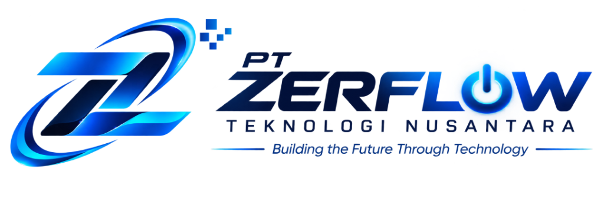

Profil Perusahaan
Zerflow Teknologi Nusantara
Building the Future Through Technology
- Bentuk usaha
- Perseroan Perorangan
- Kedudukan
- Kabupaten Bogor, Jawa Barat
- Kontak
- zerflowtech@gmail.com
I Ringkasan
Zerflow Teknologi Nusantara bergerak di bidang teknologi informasi: pengembangan perangkat lunak dan website, serta pemasangan dan pemeliharaan infrastruktur jaringan, CCTV, dan server untuk pelaku usaha di Indonesia.
Perusahaan didirikan oleh Ade Topan Prayoga dan telah disahkan sebagai badan hukum oleh Kementerian Hukum pada tanggal 4 November 2026.
II Identitas Badan Hukum
| Nama resmi | Zerflow Teknologi Nusantara |
|---|---|
| Bentuk badan hukum | Perseroan Perorangan (Usaha Mikro) |
| Nomor keputusan | AHU-A137050.AH.01.30.Tahun 2026 |
| Nomor permohonan | 4701041120260240 |
| Tanggal pengesahan | 4 November 2026 |
| Pendiri / pengurus | Ade Topan Prayoga |
| Kedudukan | Kabupaten Bogor, Jawa Barat |
| zerflowtech@gmail.com |
III Visi
Menjadi mitra teknologi terpercaya yang mendukung transformasi digital bisnis di Indonesia.
IV Misi
- Menyediakan solusi aplikasi dan website yang sesuai kebutuhan operasional klien.
- Membangun infrastruktur jaringan, CCTV, dan server yang andal dan terdokumentasi.
- Memberikan layanan purna jual serta pendampingan teknis setelah implementasi.
V Ruang Lingkup Layanan
| Layanan | Uraian |
|---|---|
| Aplikasi & software | Sistem web/mobile dan aplikasi internal (inventory, absensi, operasional) |
| Website | Profil perusahaan, katalog produk, dan landing page pemasaran |
| Jaringan | Perencanaan, instalasi, dan konfigurasi LAN/WAN, Wi‑Fi, firewall |
| CCTV | Kamera IP, NVR, rekaman, dan akses monitoring |
| Server | Server file, backup, NAS/RAID, virtualisasi ringan |
| Pemeliharaan | Kontrak maintenance dan dukungan teknis berkala |
VI Keunggulan Kerja Sama
- Satu mitra untuk kebutuhan software, web, dan infrastruktur fisik
- Penawaran scope, jadwal, dan serah terima yang jelas
- Layanan lanjutan setelah proyek selesai (go-live)